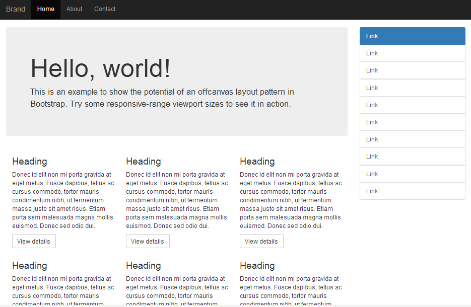
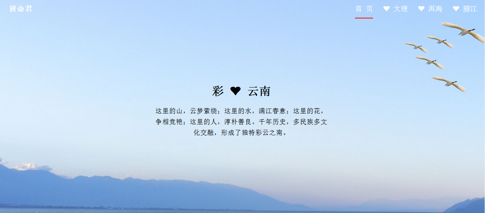

Hello everyone
我的邮箱：1296619976@qq.com关于我
-
 姓名/覃淑虑
姓名/覃淑虑
- 年龄/25
- 学历/本科
- 坐标/深圳
我是一个积极向上，做事认真负责的人。并且乐于学习，十分热爱前端技术。2014年毕业于广西财经学院，之后从事文职类工作。去年接触到Web前端，因此对前端技术产生了浓厚兴趣。 通过7个月对前端知识的自学，目前基本掌握web前端技术知识，熟悉HTML、CSS、javaScript等，能编写符合W3C标准的HTML网页;熟练使用Photoshop、sublime、webpack等工具。
专业技能
工作经历
❋ 2010年9月至2014年7月
就读广西财经学院，物理管理专业
❋ 2014年9月至2017年4月
分别在广东新宝电器有限公司和深圳市金安通电子公司，从事文职类工作
❋ 2016年10月至今
利用工作之余学习前端，购买HTML、CSS、Javascript基础书籍进行学习，同时通过上网观看“我要自学网”、“极客学院”、“慕课网”发布的相关前端视频学习其方法和思路，收货颇多，并喜欢逛知乎、GitHub等网站获取前端技术最新资讯。
作品集
自适应布局网页
使用Bootstrap框架，编写的一个能适应PC端和移动端的小案例，了解具体详情请访问地址：https://summer566.github.io/itemtwo/
博客网页
用div+css布局排版的一个简单网页，了解具体详情请访问地址：https://summer566.github.io/itemone/
